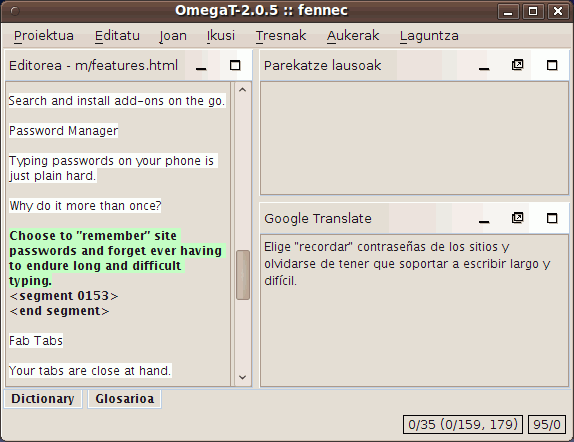

Google Translate
Google Translate Google enpresak eskaintzen duen zerbitzu bat da. Esaldiak, webguneak eta testu osoak itzultzen ditu gero eta hizkuntza gehiagoren artean. Une honetan zerrendak 50 hizkuntza baino gehiago ditu, albanieratik hasi eta jiddisheraino, baita hiztun-kopuru handiena daukaten hizkuntzak ere (ikus Itzulpenerako prest dauden hizkuntzak). Euskara ez da oraindik agertzen zerrenda horretan. Itzulpena modu automatikoan gertatzen da, giza itzultzaileren laguntzarik gabe. Google-n ikerketa taldeak berezko itzulpen-sistema estatistiko bat garatu du Google Translate-n egun eskuragarri dauden hizkuntza-bikoteetarako. Gizakiak eskuz sortutako itzulpen-memoriak (esaterako OmegaT-ren kasuan) edo arauetan oinarritutako sistemak (gehienetan "itzulpengintza automatiko" izenaren pean biltzen direnak) ez bezala, Google-k beste hurbilketa bat erabiltzeko ahalmena dauka: ordenagailua milioika hitzez elikatzen du, alde batetik testu elebakarrak erabiliz helburu-hizkuntzarako, eta bestetik gizakiak bi hizkuntzen artean itzulitako testu lerrokatuak erabiliz. Ondoren, teknika estatistikoetan oinarrituz itzulpen-eredu bat eraikitzen da. Itzulpenok oso emaitza onak eman dituzte itzulpenen ebaluazioetan.
Noski, itzulpenaren kalitatea bi faktoreren pean dago: helburu-hizkuntzako testuen eta testu elebidunen biltegien tamaina alde batetik, eraikitako ereduen kalitatea beste aldetik. Egia da zenbait kasutan itzulpenaren kalitatea eskasa izan daitekeela, baina denborarekin hobetzen joango da eta ez okertzen. Gaur egun ez dago inolako software-ik, ezta sofistikatuena ere, jatorrizko hiztun baten maila erakutsiko duenik eta itzultzaile profesional baten trebezia izango duenik. Itzulpengintza automatikoa ez da erraza, testuinguru-arazoak konpontzeko zailak baitira, baina beste inork giza kalitateko itzulpena eskaini ahal izan baino lehen erabilgarria izan daiteke.
OmegaT-ren erabiltzaileek ez dute zertan Google Translate erabili beharrik. Erabiltzen bada, erabiltzaileak itzulpena onartzeko hartu duen erabakia eta egindako itzulpena ez zaizkio Google-ri iristen. Hurrengo leihoak Google Translate-ren adibide bat erakusten du: a) jatorrizko testu ingelesa b) espainierarako itzulpena c) eslovenierarako itzulpena.

Espainierazko itzulpena eslovenierazkoa baino hobea da. Ohartu nola interesar eta navegar espainieraz zuzen erabili diren ingelesezko interest eta sail itzultzeko. Eslovenierazko bertsioan bi hitzak izen gisa itzuli dira. Gogoan izan, hala ere, ezberdintasun bakarra espainierarako material elebidun gehiago eta eslovenierarako gutxiago egotea dela.
Nola erabili Google Translate OmegaT-n
Bere erabilera aktibatzeko, markatu Google Translate menu-aukera Aukerak atalean. Lehen aldiz erabiltzean, "Berrezarri leiho nagusia" exekutatu beharko duzu (azken menu-aukera da Aukerak atalean). Google Transalte panela irekitzen ez bada, egin klik leihoaren azpialdean ageri den "Google Translate" lerroan panela irekitzeko. Doitu bere kokapena nahierara.
Aurrerantzean itzulpenerako iradokizuna agertuko da Google Translate panelean sorburu-segmentu bat irekitzen den bakoitzean. Iradokizuna zuretzat onargarria bada, sakatu Ctrl+M hura segmentuaren helburu-atalean txertatzeko. Esaterako, goiko segmentuan Ctrl+M aukerak espainierazko bertsioa gainidatziko du eta eslovenierazko iradokizuna txertatuko du.
Ez baduzu nahi OmegaT-k zure sorburu-segmentuak Google-ra bidaltzea hark itzul ditzan, kendu Google Translate menuaren marka Aukerak atalean.
Google Translate-ren arazoen konponketa
Google Translate-ren panelean ez bada ezer agertzen, egiaztatu hurrengoa:
- Linean zaude? Linean egon behar duzu Google Translate erabili ahal izateko.
- Zein da sorburu-hizkuntza? Agian Google Translate-k ez du oraindik bere zerbitzua eskaintzen zure hizkuntzarako.
- Egiaztatu Google Translate badabilela zure hizkuntza-bikoterako. Funtzionatzen al du?